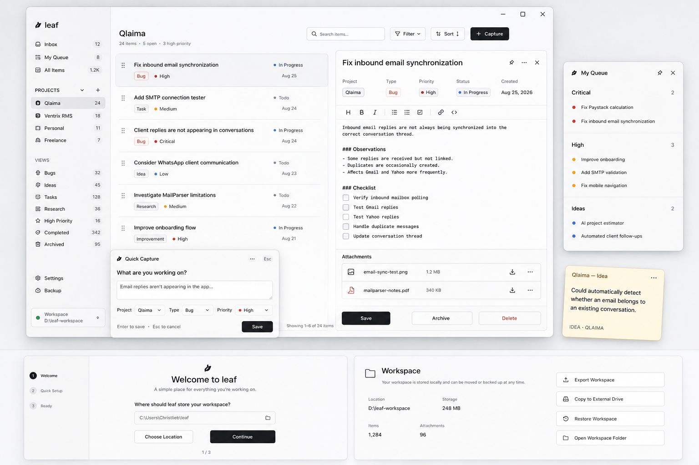

Leaf is the private, distraction-free desktop HUD that adapts to how you work. Press Alt + L to capture tasks, notes, bugs, and checklists from anywhere on your PC.

Designed for builders who value speed, privacy, and zero distraction.
Press Alt + L anywhere on your PC. Summon an ultra-fast capture window directly over full-screen code editors, games, or research papers without losing your flow.
Your workspace is saved strictly on your local disk in clean, human-readable Markdown and JSON files. No cloud lock-in, no telemetry, no tracking.
Detach any note or task card into a minimal floating desktop sticky with customizable opacity, window locking, and interactive checkbox toggles.
Automatically segment your active backlog into Critical, High, Medium, Low, and Ideas queues. Completed tasks stay visible with strikethroughs and sink to the bottom.
Subtask items wrap naturally across lines without truncation, auto-focus on creation, and allow rapid consecutive keyboard entry.
Engineered for raw performance with zero heavy Electron bloat. Starts up in milliseconds and continuously runs under 15 MB of RAM.
Everything in Leaf is accessible with simple, intuitive keyboard shortcuts.
A simple, private desktop capture HUD for everyday focus.
Download Leaf v0.1.0 (.exe)